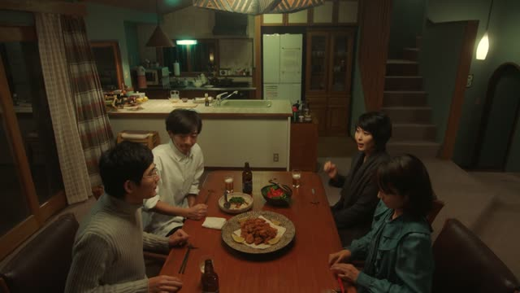
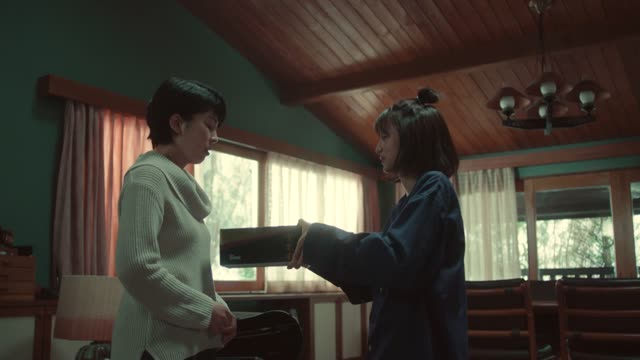
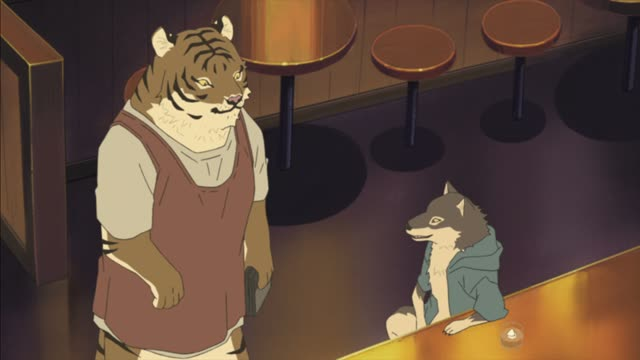
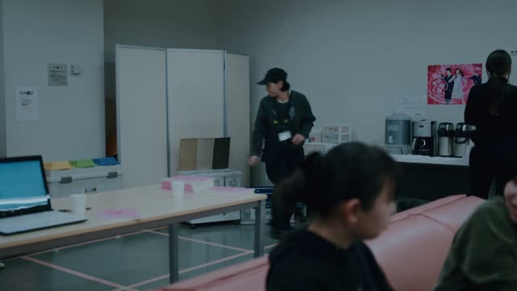

～うちに
Noun before it? Add の. な-adjective? Add な.
| Word | Add | Ending | ||
|---|---|---|---|---|
| Noun | 学生 | の | うちに | While you're a student |
| な-adjective | 静か | な | うちに | While it's quiet |
| Verb | 行ける | – | うちに | While you still can go |
| い-adjective | 温かい | – | うちに | While it's warm |

Quartet · Episode 1
温かいうちに食べましょう。
"Let's eat while it's warm."
～うちに means "while (it still is)": do it now, before the situation changes. 温かいうちに = before it gets cold.
On this card, Beppu invites the new quartet to dig in before the food cools. 食べましょう makes it polite.
Very common with a negative too: 冷めないうちに, "before it gets cold" (literally "while it isn't cold yet").
Aggretsuko · Season 1, Episode 6
あっ、冷めないうちに食べよっか。
"Oh, let's eat before it gets cold."
On this card, the food has arrived. 冷めないうちに: while it still isn't cold. Same idea, said with a negative.
Quick Examples
Advice from an older friend.
若いうちにいろいろな国に行ったほうがいいよ。
"You should travel while you're young."
CasualYour coworker starts packing up.
明るいうちに帰ります。
"I'll head home while it's still light."
PoliteYour friend hasn't called her parents.
忘れないうちに電話しなよ。
"Call them before you forget."
Negative + うちに: before X happens.
CasualA teacher talks to students.
学生のうちにたくさん本を読んでください。
"Read lots of books while you're students."
After a noun: の.
PoliteWith and without
ラーメンを食べよう。
"Let's eat ramen."
熱いうちにラーメンを食べよう。
"Let's eat the ramen while it's hot." Before it changes.
Examples from Media

Quartet · Episode 1
どうぞ、今のうちに。
"Go ahead, while you can."
今のうちに = now, while you have the chance.
Midnight Diner: Tokyo Stories · Season 2, Episode 6
熱いうちに頂こうよ。
"Let's eat while it's hot."
Kotaro Lives Alone · Episode 5
温かいうちに食べるぞよ。
"Eat it while it's warm."
Kotaro's old-style ぞよ.
Oishinbo · Episode 26
午後は忙しいから、手のあいてるうちに
"In the afternoon I'm busy, so while my hands are free..."
She cooks in the morning.

Shirokuma Cafe · Episode 26
ずいぶん太ったね、少し見ないうちに。
"You've gotten fat since I last saw you."
見ないうちに = in the time I wasn't seeing you.
Vinland Saga · Episode 12
迎撃するなら、今のうちに陣を張らねば。
"If we're going to fight, we need to set up camp now."
ねば = なければ (must).

Brush Up Life · Episode 4
今のうちにできる片付けをやっておく。
"I do the tidying I can while I have the chance."
Death Note · Episode 33
ならば、近いうちに
"Then soon..."
近いうちに = before long. The line goes on: we may meet.